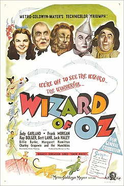

19.53.55_5b76d735.png)
O Mágico de Oz
Sinopse:
"O Mágico de Oz" é um filme musical clássico lançado em 1939, dirigido por Victor Fleming. Baseado no livro infantil de L. Frank Baum, o filme é uma jornada mágica e emocionante através da Terra de Oz.
A história começa quando Dorothy Gale, uma jovem órfã de Kansas, é levada por um tornado até a Terra de Oz junto com seu cachorro Toto. Em sua busca para retornar para casa, Dorothy é orientada a encontrar o Mágico de Oz na Cidade Esmeralda. No caminho, ela faz amizade com um Espantalho em busca de um cérebro, um Homem de Lata que deseja um coração e um Leão Covarde que precisa de coragem.
Juntos, eles enfrentam desafios e adversidades enquanto são perseguidos pela Bruxa Má do Oeste, que busca vingança pelo assassinato de sua irmã, a Bruxa Má do Leste. Com humor, música e aventura, "O Mágico de Oz" explora temas de amizade, coragem e a jornada para encontrar o verdadeiro significado de lar e felicidade.
O filme é famoso por sua trilha sonora memorável, incluindo a icônica música "Over the Rainbow", interpretada por Judy Garland, que se tornou um hino de esperança e sonhos realizados.